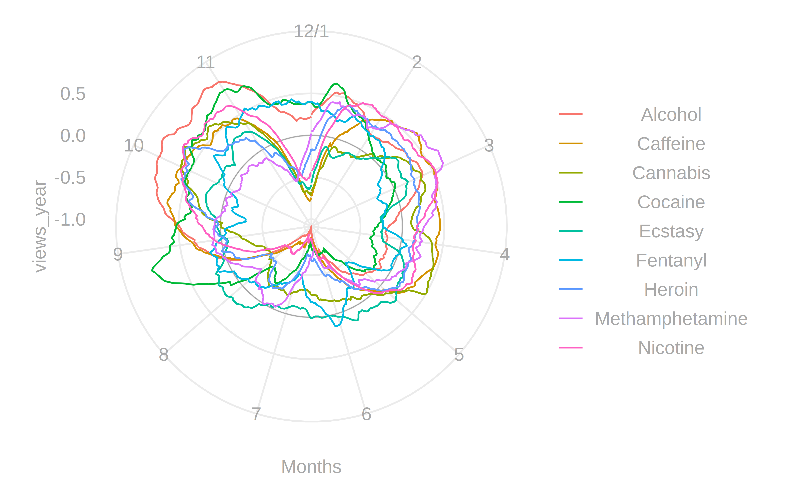
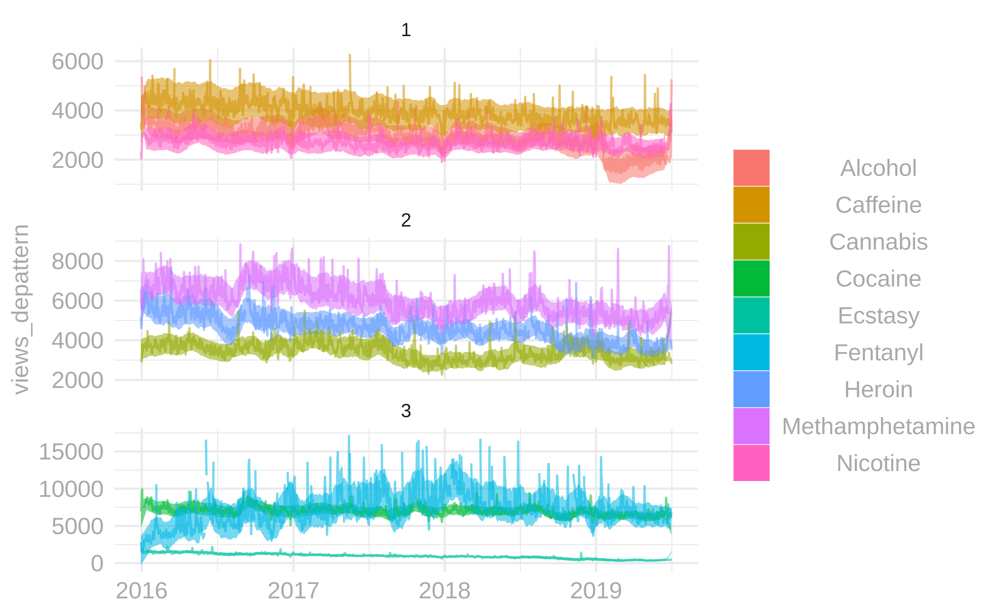

Aim
This plot should enable you to explore possible trends and patterns quickly. To that end, it combines the strengths of human perception with the perks of automatic data preprocessing. The human is good at finding large general patterns and judge similarity by it. The computer, on the other hand, excels at averaging data points that are either many (weekly trends) or far from each other (yearly trends) or cluster data based on small highly frequent patterns. However, this visualisation fails to tell a coherent story with the data. Telling this story was — as I realised too late — an aim of this seminar. My only hope is that this plot enables others to find interesting stories to tell (with graphics).
Background Story
Getting the Data
The data is scraped via a rest API that is provided by Wikipedia for this purpose. Oliver Keyes develops a thin wrapper around this restful API for R in the form of the pageview package (note that this project uses the GitHub version fixed on the commit d32c629). More information about the restful API. I scrape a list of articles about several drugs, from the English Wikipedia from the first day of 2015 till the last of 2019.
get_articles <- function(articles, start, end){
article_pageviews(
project = c("en.wikipedia"),
article = articles,
platform = c("desktop", "mobile-web", "mobile-app"),
start = pageview_timestamps(start),
end = pageview_timestamps(end)
)
}
psych_active <- c(
"Alcohol",
"Nicotine",
"Caffeine",
"Cannabis",
"Methamphetamine",
"Cocaine",
"Heroin",
"Ecstasy",
"Fentanyl"
)
start <- ymd("2015-01-01")
end <- ymd("2019-12-31")
views <- get_articles(psych_active, start, end)Remove outliers
Wikipedia seems to make some errors now and then (or more precisely there are sometimes issues with how articles are redirected). So I estimate the winsorized mean and standard deviation (sd) and remove (set to NA) values that lie beyond four (winsorized) sd above the (winsorized) mean. This estimation is pooled overall device types and agents.
remove_outliers <- function(views){
views %>%
# sum over devices and agents
group_by(article, date) %>%
summarise(views = sum (views)) %>%
# remove extremes
mutate(trimed_mean = winsor.mean(views, trim = 0.05),
trimed_sd = winsor.sd(views, trim = .05),
cutoff = trimed_mean + 4*trimed_sd,
views = if_else(views < cutoff, views, NA_real_),
date = as_date(date)) %>%
ungroup()
}
views <- remove_outliers(views)First Impression
We have three dimensions that are of interest and hence are target of the visualisation: date, article and number of views (views from now on).
views %>%
ggplot(aes(date, views, group = article, color = article)) +
geom_line()This first inspection reveals two interesting problems I will focus on — beyond that this is not too pleasing graphics overall. First, the average and variability of these articles views are quite different (ever heard about Fentanyl?). That warrants an approach on how to scale. Second, we have a rather high frequency that may hide some exciting patterns. The general approach to address these issues is to decompose the signal into regular patterns, most notably recurring patterns and long term trends.
Decompose Patterns
A first step to address these two problems is to apply a smoothing filter. To that end, I will convert this into a time series format to apply rolling functions over the date. The rolling mean and sd over 365 days are used to approximate the long term differences between the articles averages and variabilities.
views <- extract_trend(views)
views %>%
ggplot(aes(date, trend, group = article, color = article)) +
geom_line()
views %>%
ggplot(aes(date, trend_sd, group = article, color = article)) +
geom_line()Substrating the rolling mean and dividing by the rolling sd results into a flexible z-standardisation. So let’s plot the first graphic again.
views %>%
ggplot(aes(date, views_std, group = article)) + geom_line(alpha = .3)Besides that this plot is now uninformative about any differences between the articles, it gets clear that these articles share a not so small portion of their variance across the date. So I partitioned the date variable into repeating date patterns.
add_dates <- function(views){
mutate(views,
year = year(date),
month = month(date),
week = week(date),
day = day(date),
wday = wday(date),
doy = yday(date))
}
views <- add_dates(views)I think some of the higher frequency comes from differences over weekdays.
extract_wday_trend <- function(views) {
views %>%
as_tibble() %>%
group_by(article, wday) %>%
mutate(views_wday = mean(views_std, na.rm = TRUE)) %>%
ungroup()
}
views <- extract_wday_trend(views)
plot_wday_ <- views %>%
ggplot(aes(wday, views_wday, group = article, color = article)) +
geom_line() + theme_minimal()
plot_wday_This type of pattern is practically made for a polar coordinate system.
plot_wday_ + coord_polar()
extract_year_trend <- function(views){
views_year <- views %>%
group_by(article, doy) %>%
summarise(views = mean(views_std - views_wday, na.rm = TRUE)) %>%
list() %>%
rep(3) %>%
bind_rows() %>%
group_by(article) %>%
mutate(doy2 = 1,
doy2 = cumsum(doy2)) %>%
as_tsibble(article, doy2) %>%
mutate(
views_year = slide_dbl(
views,
mean,
na.rm = TRUE,
.size = 30,
.align = "center-left"
)) %>%
as_tibble() %>%
ungroup() %>%
filter(between(doy2, max(doy), (2*max(doy)) - 1)) %>%
select(article, doy, views_year)
left_join(views, views_year, by = c("article", "doy"))
}
views <- extract_year_trend(views)
plot_year <- function(views) {
months <- c("J", "F","M", "A", "M", "J", "J", "A", "S", "O", "N", "D", "")
months <- c(12, 2:11, 1)
breaks_year <- function(x)seq(x[1], x[2], length.out = 12)
views %>%
ggplot(aes(doy, views_year, group = article, color = article)) +
geom_hline(yintercept = 0, color = "darkgrey", size = 0.3) +
geom_line() +
coord_polar() +
theme_minimal() +
scale_x_continuous("Months", breaks = breaks_year, labels = months) +
theme(panel.grid.minor = element_blank()) +
theme_text
}
plot_year(views)
Having extracted the patterns, I can remove them from the overall data and scale it back. Additionally, I create a ten-day smoothed version of the views without a pattern.
views <- remove_pattern(views)I create a plot that conveys both the raw data and the smoothed trend (smooth views without pattern +/- 1sd).
plot_year <- function(views) {
months <- c("J", "F","M", "A", "M", "J", "J", "A", "S", "O", "N", "D", "")
months <- c(12, 2:11, 1)
breaks_year <- function(x)seq(x[1], x[2], length.out = 12)
views %>%
ggplot(aes(doy, views_year, group = article, color = article)) +
geom_hline(yintercept = 0, color = "darkgrey", size = 0.3) +
geom_line() +
coord_polar() +
theme_minimal() +
scale_x_continuous("Months", breaks = breaks_year, labels = months) +
theme(panel.grid.minor = element_blank()) +
theme_text
}
plot_year(views)
Clustering
Another source of visual clutter is that we consider 9 (possibly more) articles. That stretches the boundary of what can be effectively encoded in colour. That is further complicated by the fact that they are more or less similar in shape. A possible remedy is to cluster the different articles into groups that are similar in their overall shape. How to define similarity in the context of time-series is a complicated and well studies topic that is certainly beyond the scope of this project. However, some critical consideration may be noted. By choosing to scale the series, we deemed the differences between grand average and variability as uninteresting, which should be considered in how we operationalise similarity (because we only want similarity in thinks we consider essential). Also, because I have no domain knowledge about the articles under study and the long term goal of building an interactive dashboard, we want a similarity definition that is parameter-free. To my knowledge, there is only one similarity measure that satisfies both: cross-entropy. Conceptually it may be understood as a measure that defines how much information the one time series caries over another, by assessing how many bits may be saved when the one is used to compress the other and visa versa. This is formalised as the complexity of one measure plus the Kullback–Leibler divergence between the two. While both terms of this sum are generally hard to compute some good approximation, have been found. One solution uniquely suited to time series analysis is permutation distribution clustering. It takes the permutation distribution as a proxy for the required measure of complexity and the squared Hellinger distance as a proxy for the Kullback–Leibler divergence.
cluster_ts <- function(data, nclust, id_cols, names_from, values_from){
id_cols <- enquo(id_cols)
names_from <- enquo(names_from)
values_from <- enquo(values_from)
wide <- pivot_wider(data,
id_cols = !!id_cols,
names_from = !!names_from,
values_from = !!values_from) %>%
select(-c(!!id_cols))
dist <- pdcDist(as.matrix(wide))
out <- tibble(cluster = kmed::fastkmed(dist, nclust, iterate = 100)$cluster,
article = names(wide))
recode_by_size <- function(x) {
t <- table(x)
size <- order(t)
out <- names(t)
names(out) <- size
as.numeric(recode(x, !!!out))
}
out <- mutate(out, cluster = recode_by_size(cluster))
out
}
add_cluster <- function(views, nclust){
cluster <- cluster_ts(
views,
nclust = nclust,
id_cols = date,
names_from = article,
values_from = views_std
)
views %>% select(-starts_with("cluster")) %>%
left_join(cluster, by = "article")
}
break_clusters <- function(views){
arrange(nest(group_by(views, cluster)), cluster)$data
}
views <- add_cluster(views, 3)
clusters <- break_clusters(views)Lets plot it crudely.
plot_alltime(views) + facet_wrap(~cluster, scales = "free_y", ncol = 1)
Align Plots
Now we have three plots representing the reoccurring week and year pattern and the full timeline grouped into clusters.
I imagine a visual arrangement where each row represents a cluster, and each column a timeframe — Let’s begin with the arrangement of a single row.
cluster1 <- filter(views, cluster == 1)
plot_wday(cluster1) +
plot_year(cluster1) +
plot_alltime(cluster1) &
theme(legend.position = "none")And first I’ll align the polar plots, so they share a common y-axis.
remove_legend <- theme(legend.position = "none")
remove_y_axis <- theme(
axis.ticks.y = element_blank(),
axis.text.y = element_blank(),
axis.title.y = element_blank()
)
remove_margin <- theme(plot.margin = unit(c(0, 0, 0, 0), "cm"))
get_max_range <- function(plots, axes) {
limits <- map(plots, function(x)
layer_scales(x)[[axes]]$range$range)
limits_lower <- map_dbl(limits, 1)
limits_upper <- map_dbl(limits, 2)
c(min(limits_lower), max(limits_upper))
}
replace_data <- function(newdata, plot) {
plot$data <- newdata
plot
}
add_layer <- function(plots, ...)map(plots, ...)
prepare_polar <- function(left, right, datas) {
lefts <- map(datas, replace_data, left)
rights <- map(datas, replace_data, right)
polar_range <- get_max_range(c(lefts, rights), "y")
lefts <- suppressWarnings(imap(
lefts,
~ .x +
remove_margin +
remove_legend +
scale_y_continuous(limits = polar_range) +
labs(tag = .y)
))
rights <- suppressWarnings(map(rights, ~ .x +
remove_margin +
remove_legend +
remove_y_axis))
first_rights <- rights[[1]]
last_rights <- rights[[length(rights)]]
rights <- map(rights, ~ .x +
theme(axis.text = element_blank(),
axis.title = element_blank()))
rights[[1]] <- first_rights +
theme(axis.title = element_blank())
rights[[length(rights)]] <- last_rights +
theme(axis.text.x = element_blank())
first_lefts <- lefts[[1]] +
theme(axis.title = element_blank())
last_lefts <- lefts[[length(lefts)]]
lefts <- map(lefts, ~ .x +
theme(axis.text = element_blank(),
axis.title = element_blank()))
lefts[[1]] <- first_lefts
lefts[[length(lefts)]] <- last_lefts +
theme(axis.text = element_blank(),
axis.title.y = element_blank())
list(lefts = lefts, rights = rights)
}
align_polar <- function(polar, l = 1, r = 2){
rows <- seq_along(polar$lefts)
pos_left <- map(rows, ~area(.x, l, .x, l))
pos_right <- map(rows, ~area(.x, r, .x, r))
do.call(c, c(pos_left, pos_right))
}
polar <- prepare_polar(plot_wday(views),
plot_year(views),
clusters)
wrap_plots(flatten(polar), design = align_polar(polar))Now the full timeline.
prepare_alltime <- function(plot, datas){
plots <- map(datas, replace_data, plot)
plots <- map(plots, ~.x +
remove_margin +
remove_legend +
theme(axis.ticks = element_blank(),
axis.title.y = element_blank()) +
scale_y_continuous(position = "right")
)
last <- plots[[length(plots)]]
plots <- map(plots, ~.x +
theme(axis.title.x = element_blank(),
axis.text.x = element_blank()))
plots[[length(plots)]] <- last
plots
}
align_alltime <- function(plots, l, r){
rows <- seq_along(plots)
pos <- map(rows, ~area(.x, l, .x, r))
do.call(c, pos)
}
alltime <- prepare_alltime(plot_alltime(views), clusters)
wrap_plots(alltime, design = align_alltime(alltime, 1, 2))Colour
The colours are reused, thus creating visual relations which do not exist in the data. The colour coding for this plot should optimise how well one can distinguish the different articles. A palette which varies the hue, but keeps luminance and chroma as fixed as possible is, in my opinion, a good fit for that task. However, it is of particular importance that they are as also as different as possible within each cluster. Because of the lack of a more sophisticated algorithm, I scramble the order of the colours 100 times and take a sample with the highest sum of squares of hue within each group.
article_order <- function(views){
views %>%
group_by(cluster, article) %>%
summarise(mean = mean(views_depattern_smooth, na.rm = TRUE)) %>%
arrange(cluster, desc(mean)) %>%
select(cluster, article)
}
max_color_diff <- function(color, cluster, n = 100){
col2hue <- function(x)rgb2hsv(col2rgb(x))[1, ]
sshue <- function(colors, cluster){
colors <- tibble(colors, cluster, hue = col2hue(colors)) %>%
group_by(cluster) %>%
summarise(sshue = var(hue))
mean(colors$sshue, na.rm = TRUE)
}
shuffle <- function(x)sample(x, length(x))
colors <- replicate(n, shuffle(color), simplify = FALSE)
colors[[which.max(map_dbl(colors, sshue, cluster))]]
}
add_colors <- function(plots, views){
article_order <- article_order(views)
colors <- max_color_diff(scales::hue_pal()(length(article_order$article)),
article_order$cluster)
names(colors) <- article_order$article
add_layer(
plots,
~ .x +
scale_color_manual(values = colors,
breaks = article_order$article) +
scale_fill_manual(values = colors,
breaks = article_order$article)
)
}But a legend is still missing.
get_legends <- function(plots){
map(plots, ~get_legend(.x + theme(legend.position = "right", legend.text.align = 0, legend.justification = "left")))
}
align_legends <- function(legends, l, r){
rows <- seq_along(legends)
pos <- map(rows, ~area(.x, l, .x, r))
do.call(c, pos)
}Final
So the final plot is:
plot_final <- function(views){
wday <- plot_wday(views)
year <- plot_year(views)
alltime <- plot_alltime(views)
clusters <- break_clusters(views)
nclust <- length(clusters)
polar <- prepare_polar(wday, year, clusters)
alltime <- prepare_alltime(alltime, clusters)
plots <- c(flatten(polar), alltime)
plots <- add_colors(plots, views)
legends <- get_legends(plots[seq_along(unique(views$cluster))])
designs <- c(align_polar(polar, 1, 2),
align_alltime(alltime, 3, 3),
align_legends(legends, 4, 4))
plots <- c(plots, legends)
wrap_plots(plots, design = designs, widths = c(1, 1, 2, 0.5)) +
plot_annotation(title = "Wikipedia Trends",
caption = "Polar plots (left) show averaged trends in standard deviation, while cartesian plots (right) represents the raw count (shaded area +/- 1SD smothed over ten days).\nTrends shown in plots to the left are removed from plots to the right.\nRows are created by clustering articles by similarity.",
theme = theme(plot.caption = element_text(
face = "plain",
colour = "darkgrey",
size = 10),
plot.title = element_text(
face = "plain",
colour = "darkgrey",
size = 15),
plot.margin = margin(10, 10, 10, 10)))
}
plot_final(views)
You can find the full code on GitHub.
Shortcomings
Even after fiddling around quite a while, I was unable to solve two problems. First, the x-axis of the polar plots puts the first and last value on the same angle, second, there is no axis title on the two y-axises which spans the whole plot (I head to revert to the caption for the information on the units). I gave up on these, because “[…] ggplot2 in many ways seems to be fueled by magic and unicorn blood […]”. Another annoying thing is the speed of plotting, which is something I wouldn’t even dare to try to improve.
If I were to recreate this plot, I would do it in D3.js. With D3, I could overcome the shortcomings described above and introduce real interactiveness. ggplot2 inhibits smooth interactions through its lack of speed and general design principles.